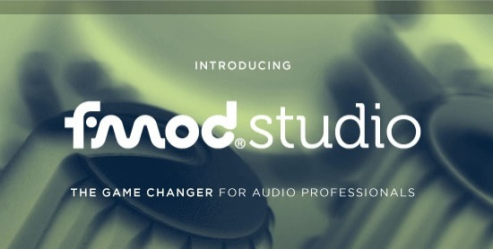

Firelight Technologies FMOD Studio API

FMOD Studio is an audio content creation tool for games, with a focus on a Pro Audio approach. It has an entirely new interface that will be more familiar to those using professional Digital Audio Workstations than existing game audio tools and is loaded with powerful features.
The What's New In 1.07 page highlights the new features of Studio API for this release.
The Unity Integration 2 page has information about using FMOD with Unity.
The Unity Integration distributed prior to 1.07.03 has deprecated. It still receives script fixes and new runtime libraries every release. The Legacy Unity Integration page has information about using FMOD with Unity.
The UE4 Integration page has information about using FMOD with UE4.
There are platform specific documentation pages to help get started when using the API directly.
Find out more information at our Questions and Answers database, or contact us directly at support@fmod.com.